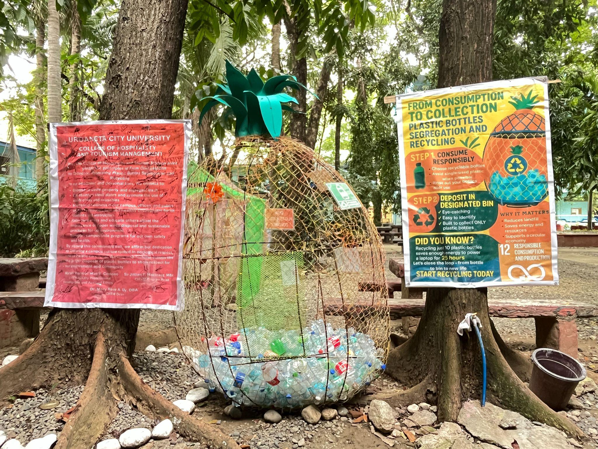
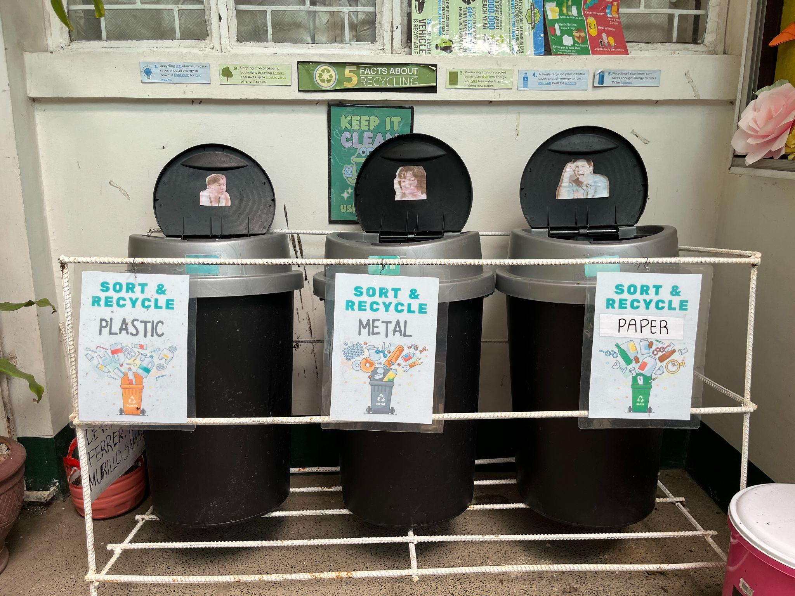

| Waste Management Programs & SDG Alignment Campaign | |
|---|---|
|
 Solid waste collection and segregation area showing color-coded bins
|
 Institutional poster outlining waste management alignment with the Sustainable Development Goals
|
At Urdaneta City University, a comprehensive suite of waste management initiatives has been implemented to significantly contribute to the attainment of the 17 Sustainable Development Goals (SDGs). These programs reflect the University’s strong commitment to minimizing environmental impact, advancing a circular economy, and promoting responsible consumption and production across all campus operations.
Central to these efforts is the implementation of a campus-wide waste segregation system, where waste is systematically classified at the source into organic, inorganic, hazardous, recyclable, and electronic waste (e-waste) streams. This practice ensures proper handling, reduces contamination, and enhances the efficiency of downstream waste processing and recovery.
The University also operates composting facilities that convert organic waste generated on campus into nutrient-rich fertilizer. This compost is utilized in campus landscaping and urban farming initiatives, effectively closing the waste loop and reducing reliance on chemical fertilizers.
In addition, UCU has established recycling stations and strengthened partnerships with licensed waste management vendors for the proper collection and processing of paper, plastics, glass, metals, and electronic waste. Complementing these efforts are regular e-waste collection drives, which ensure that electronic waste is disposed of in accordance with environmental regulations and best practices.
To further promote sustainable behavior, the University actively conducts campus-wide zero-waste campaigns, encouraging the principles of reduce, reuse, and recycle (3Rs) through awareness programs, informational signage, and student-led environmental initiatives. These campaigns are reinforced by institutional policies that support the reduction and gradual elimination of single-use plastics in canteens, vending areas, and university events, replacing them with reusable and eco-friendly alternatives.
Digital transformation efforts have also been integrated into administrative operations, with the digitalization of processes significantly reducing paper consumption and improving operational efficiency. At the academic level, waste management and sustainability topics are incorporated into curriculum offerings, research projects, and student theses, including studies on life cycle analysis, waste-to-energy systems, and sustainable packaging solutions.
Technological innovation is likewise being applied through the installation of smart waste bins and monitoring systems, which track waste collection volumes and optimize waste management logistics. Furthermore, the University actively collaborates with local government units (LGUs), non-government organizations (NGOs), and private sector partners to strengthen waste governance, support circular economy initiatives, and promote sustainable community practices.
These integrated waste management initiatives directly support multiple SDGs, including:
By minimizing health risks through proper waste handling and disposal systems.
By embedding sustainability and waste management into academic programs and research.
By preventing water contamination through effective waste control and disposal.
By promoting innovation in waste processing technologies and smart systems.
By fostering environmentally responsible campus practices and infrastructure.
By encouraging sustainable consumption patterns and waste reduction strategies.
By reducing greenhouse gas emissions associated with waste management activities.
By preventing pollution and reducing the flow of waste into aquatic ecosystems.
By protecting terrestrial ecosystems through sustainable waste practices.
By strengthening collaborations with LGUs, NGOs, and private sector partners to enhance sustainability governance.
Through these multifaceted waste management programs, Urdaneta City University demonstrates a holistic and forward-thinking approach to sustainability. By integrating operational practices, academic engagement, technological innovation, and multi-sector partnerships, the University not only reduces its environmental footprint but also serves as a model for responsible waste management and sustainable development in higher education.